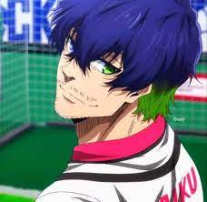
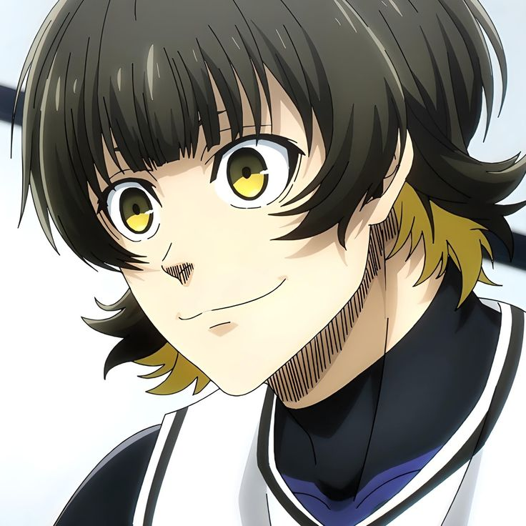
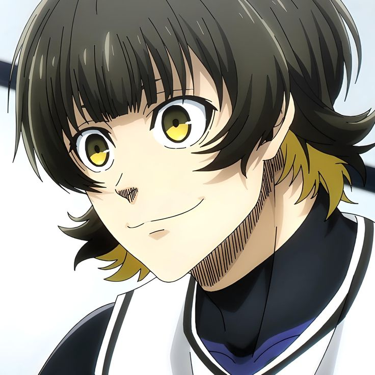
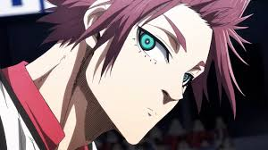
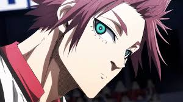
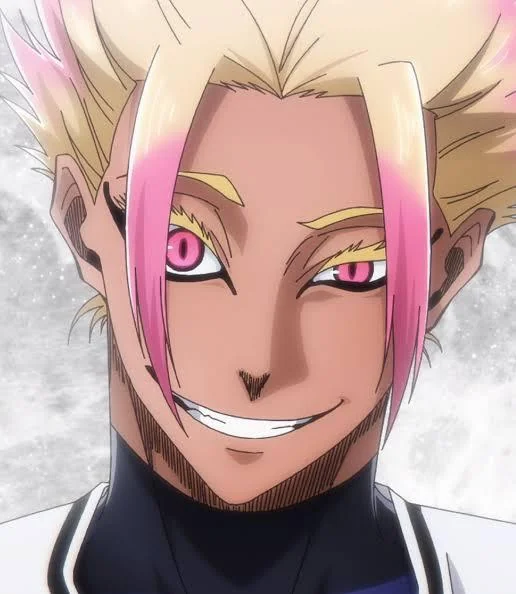
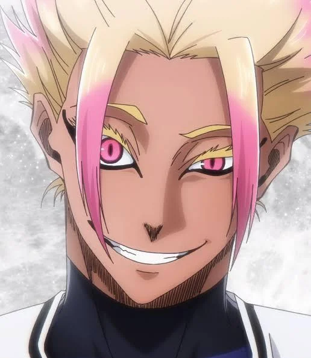

Blue Lock features several interesting and quirky character traits and design choices. Some players are inspired by real-life football legends, while others have unique quirks and relationships. The series also draws inspiration from other anime, particularly in terms of character designs and themes.
 

 



 
